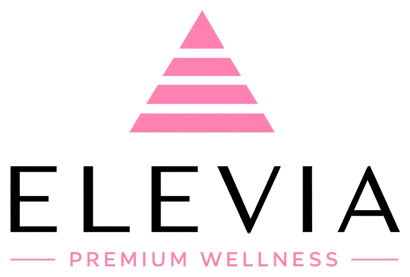

Presença Global
0 países atendidos
 EUA
EUA BRASIL
BRASIL PARAGUAI
PARAGUAI ARGENTINA
ARGENTINA COLÔMBIA
COLÔMBIA MÉXICO
MÉXICO DUBAI
DUBAI FRANCE
FRANCE UK
UK ESPANHA
ESPANHA
Inovação e tecnologia aplicada ao bem-estar e performance. Conheça o próximo nível da suplementação inteligente.
VISITAR WEBSITE →Soluções farmacêuticas de alto padrão desenvolvidas para performance, saúde e longevidade dentro do ecossistema BRX.
CONHECER BRXPHARMA →Alta performance integrada: a convergência definitiva entre resistência aeróbica e força industrial.
CONHECER HUB →Networking de alto impacto e protocolos de elite para membros selecionados no ecossistema.
ACESSAR SOCIETY →Logística 4.0 com rastreabilidade total e agilidade industrial própria Bro Pharmaceuticals.
VISITAR H2F SHIPPING →O ecossistema definitivo de performance industrial, unindo milhares de membros através de protocolos de precisão.
EUABRASILPARAGUAIARGENTINACOLÔMBIAMÉXICODUBAIFRANCEUKESPANHA